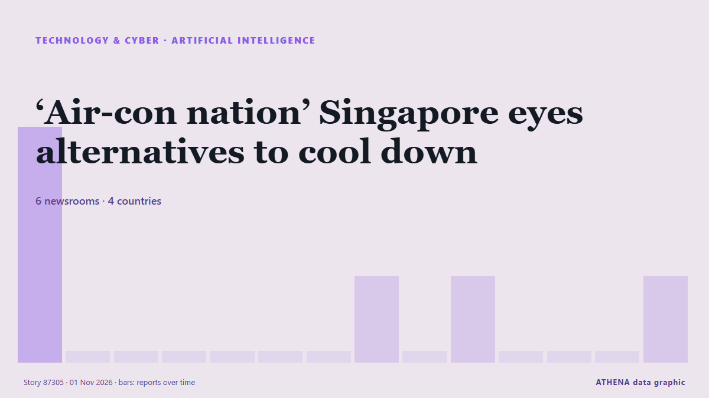

Künstliche Intelligenz
| 19. Okt. | 1 |
|---|---|
| 20. Okt. | 0 |
| 21. Okt. | 0 |
| 22. Okt. | 0 |
| 23. Okt. | 0 |
| 24. Okt. | 0 |
| 25. Okt. | 0 |
| 26. Okt. | 2 |
| 27. Okt. | 1 |
| 28. Okt. | 1 |
| 29. Okt. | 8 |
| 30. Okt. | 6 |
| 31. Okt. | 3 |
| 1. Nov. | 2 |
Schlagzeilen werden auf Englisch angezeigt, wie veröffentlicht.

‘Air-con nation’ Singapore eyes alternatives to cool down
Some buildings in the city-state are exploring active chilled beams and radiant cooling to replace compressor units that release hot air into the environment. von Free Malaysia Today
Pope says never delegate decisions on weapons and borders to AI
(ANSA) - ROME, 30 OTT - Never delegate decisions on weapons and borders to Artificial Intelligence, Pope Leo XIV said Friday. von ANSA English
OpenAI slashes funding target by $10 billion amid tech rout, reports
OpenAI has slashed the target for its latest funding round by $10 billion amid a selloff in tech stocks driven by AI worries, the Financial Times reported on Friday, citing people with knowledge of… von Business Recorder
In China, the AI bubble has already burst
Lofty valuations collapse under worries about AI demand and curbs on Chinese exports. von Express Tribune
Samsung execs meet Open AI's Sam Altman to discuss AI transformation
SEOUL, Oct. 31 (Yonhap) -- Top executives from key Samsung affiliates met with O... von Yonhap (English)
Malicious Claude Code extension on Cursor planted SSH backdoors
A malicious version of Anthropic's Claude Code VS Code extension was distributed through Cursor's extension marketplace for approximately 11 hours on October 29, exposing up to 5,000 developers to… von BleepingComputer
AI giants promise publishers new way to block some scraping
Publishers are facing a surge in bots that scrape their articles to feed AI models. von The Straits Times
Dartmouth provost resigns over AI use in published articles
Dartmouth College Provost Santiago Schnell resigned Wednesday after a faculty-led investigation concluded he used artificial intelligence (AI) to substantially alter his published writing, violating… von VnExpress International
Cash is king as investors draw new battle lines in AI spending boom
Microsoft shares rose more than 3% in after-hours trading, while Alphabet plunged nearly 10%, as investors favoured companies profiting from AI over those struggling to contain its costs. von Free Malaysia Today
Reddit will make users log in as Google’s AI search cuts its traffic
Reddit is moving to a “logged-in-only experience”, chief executive Steve Huffman told shareholders on Thursday. von The Next Web
HHTD 26: Foxconn Chairman highlights processing and vertical integration strengths
Foxconn Chairman Young Liu said at the opening of Hon Hai Tech Day 2026 (HHTD26) on October 30 that the company's core competitive strengths lie in its "processing capabilities" and "vertical… von DigiTimes Asia
Honda targets Level 4 autonomy by 2027, AI maps by 2030
Honda Motor plans to achieve Level 4 autonomous driving around 2027 and replace high-definition maps with AI technology around 2030, enabling Level 4 vehicles to navigate the narrow roads and… von DigiTimes Asia
As bosses push workers to use AI, a Kentucky man found a way to opt out: a federal law protecting religious beliefs
University of Kentucky administrator David Durman is the first Humanist to be granted an AI use exemption under Title VII of the Civil Rights Act. von Fortune
The story of Anthropic in three numbers
IPO filing leaves open questions about the state of the company’s business and the wider sector. von Financial Times - Markets
Anchored in Data Sovereignty, the Engagement Enables the Legal Sector to Adopt Generative AI Safely and Confidently
Ridger Delivers MUX Private AI Deployment to Shum Wong & Co., Solicitors in Hong Kong SINGAPORE – Media OutReach Newswire – 30 October 2026 – Ridger, an AI infrastructure company, today announced the… von Laotian Times
AI drives digital transformation in China's primary care
A calculation from the latest numbers shows that 1.8 million people remain without a health care provider. von The Globe and Mail
NCC, partners seek stronger measures against cyber threat
NCC seek stronger cyber resilience as AI intensifies cyber threats Resilience By Jessica Dogo The Nigerian Communications Commission (NCC) has called for stronger collaboration… von News Agency of Nigeria
Amazon sinks as AI spending eclipses fastest cloud growth in five years
Amazon, opens new tab on Thursday reported a massive cash burn in the third quarter, sending shares sharply lower, while it signaled higher capital expenditures next year atop an already huge amount… von FBC News
Nvidia, Meta partner on Muse agent as Nvidia invests $3 billion
Nvidia and Meta on Tuesday said they will partner to expand their work on Meta’s Muse assistant and the Muse family of models. von Business Recorder